[Image courtesy jschild].
I use Debian's mini.iso installer to create a lightweight base configuration that can be customized for various tasks and desktops.
Let's go!
Debian GNU/Linux is an operating system created by volunteers of one of the largest and longest-running free software projects in the world. More than a hundred other Linux distributions like Ubuntu build their distributions on solid Debian awesomesauce.
There are 3 release branches: jessie/stable, stretch/testing, and sid/unstable. Below is a visual walk-through of a sample Debian stable setup that makes use of an entire storage device divided into 3 partitions: unencrypted root, and LUKS encrypted swap + home.
0. Prepare install media
Download the 64-bit mini.iso (32bit for older machines) and flash the image to a USB stick. An alternative (my choice) is adding the image to a USB stick with multiple Linux installers.
The minimal console installer (requires network connection) downloads all the latest packages during setup.
1. Launch


 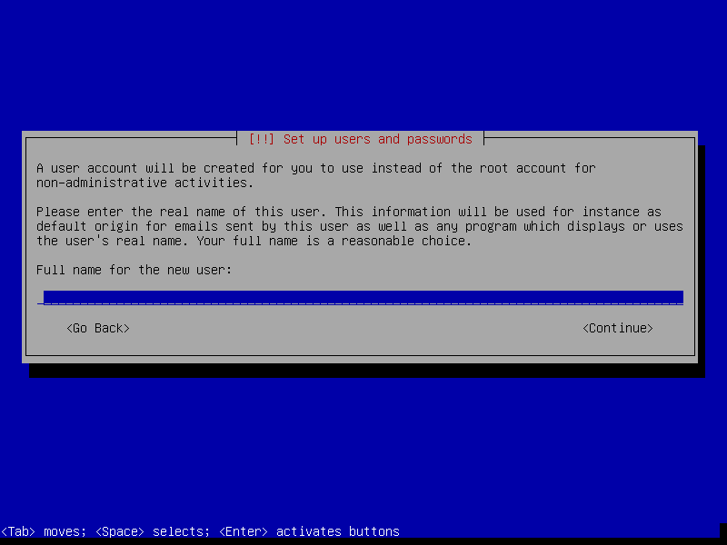
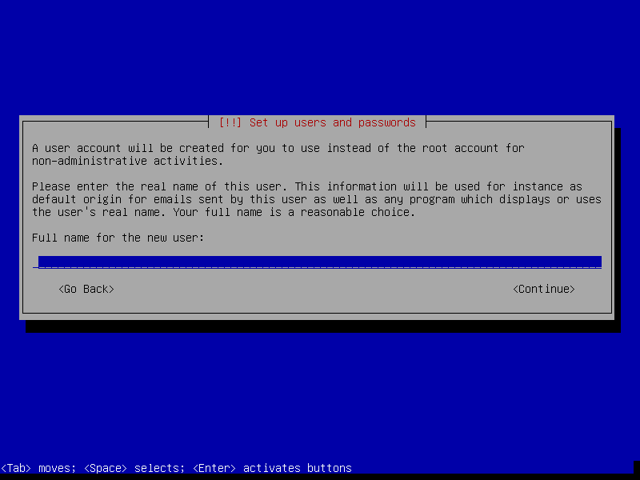


2. Partitions
In the example below I create 3 partitions on the disk:
- sda1 configured as 20GB root
- sda5 configured as 1GB LUKS encrypted swap with random key
- sda6 uses remaining space as LUKS encrypted home with passphrase


 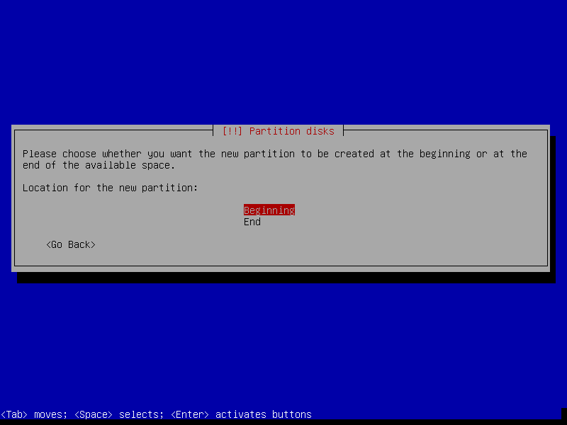
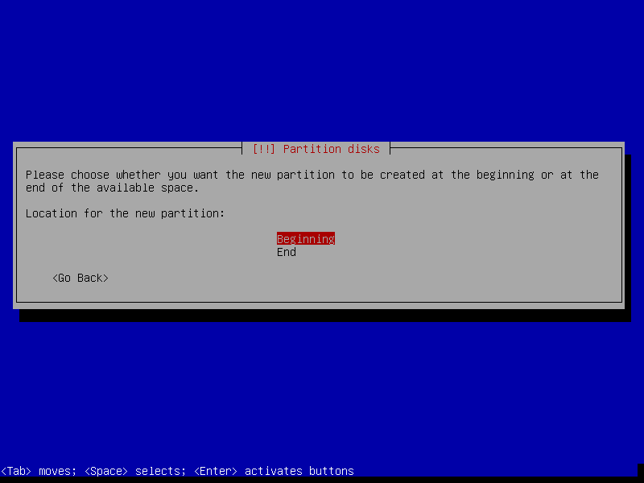
Setting Mount options to noatime decreases write operations and boosts drive speed.
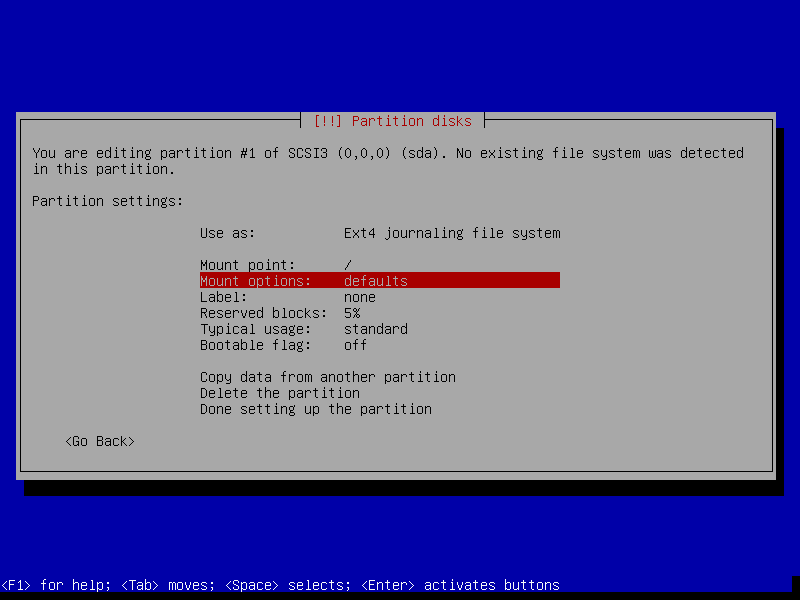 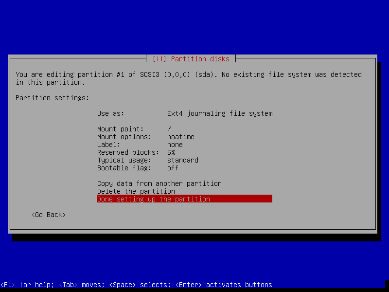
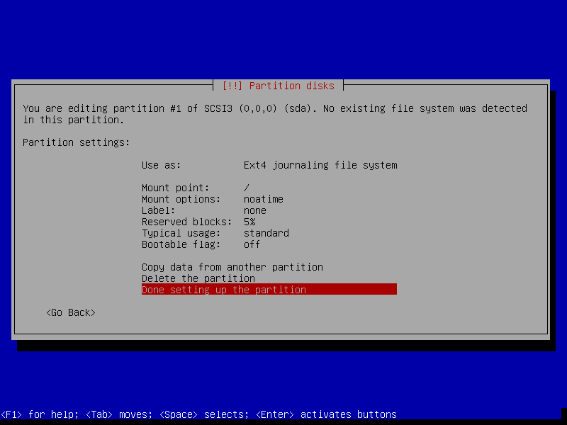


 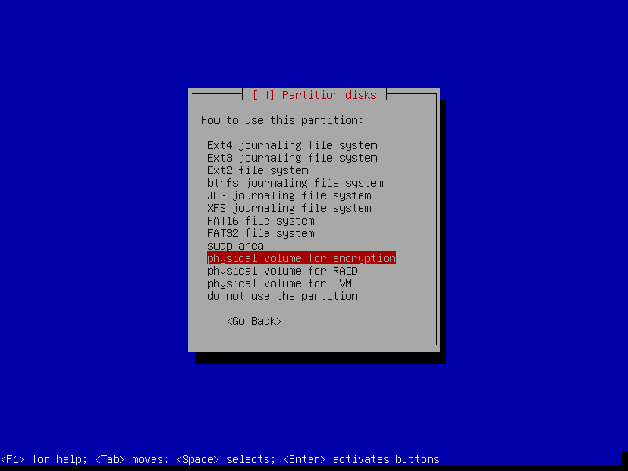
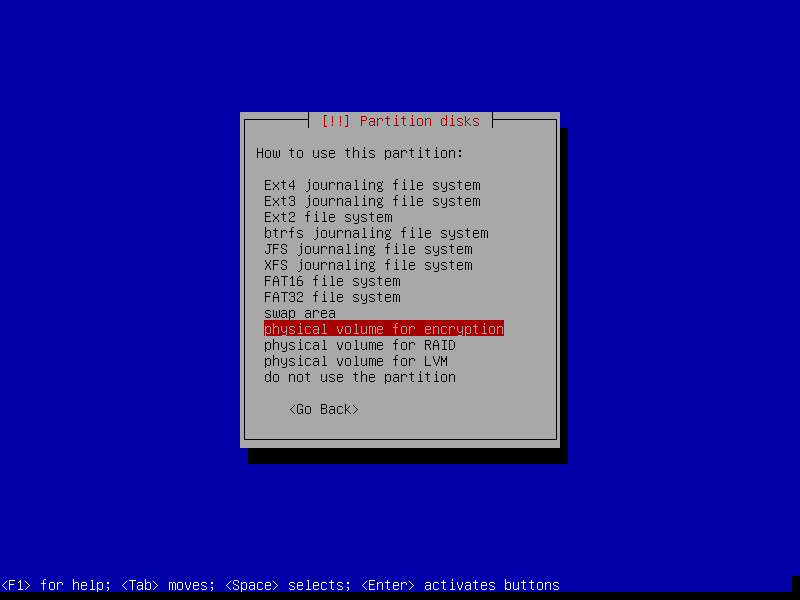


If the hard disk has not been securely wiped prior to installing Debian (using a utility like DBAN) you may want to set Erase data to yes. Depending on the size of the disk this operation can last several hours.


 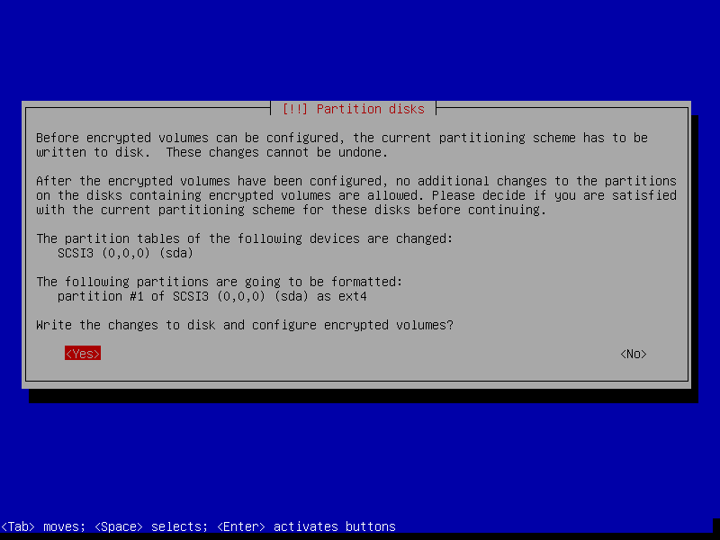
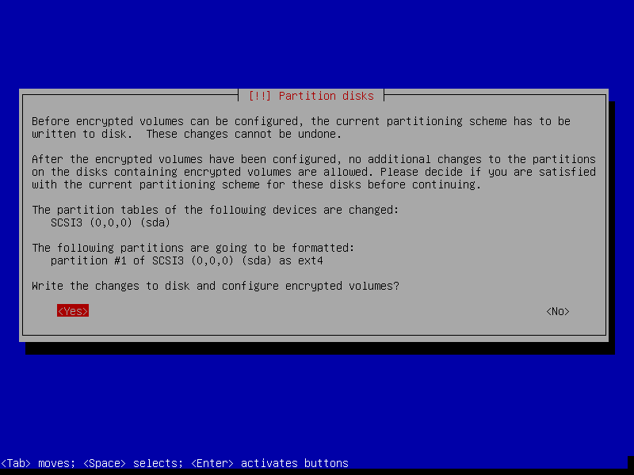


 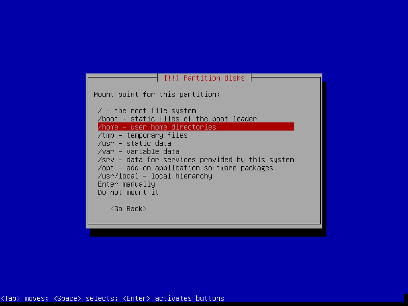
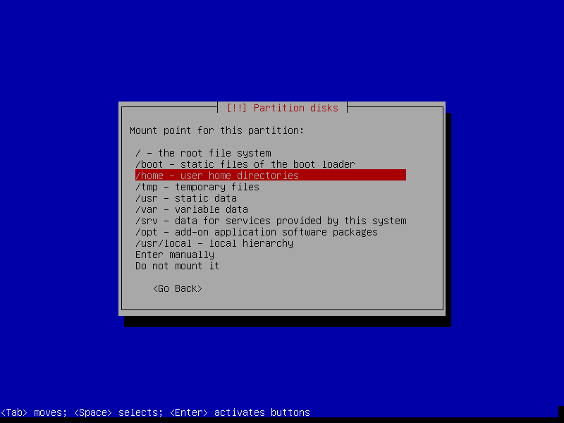

Reserved blocks can be used by privileged system processes to write to disk - useful if a full filesystem blocks users from writing - and reduce disk fragmentation. On large, non-root partitions extra space can be gained by reducing the default 5% reserve set aside by Debian to 1%.
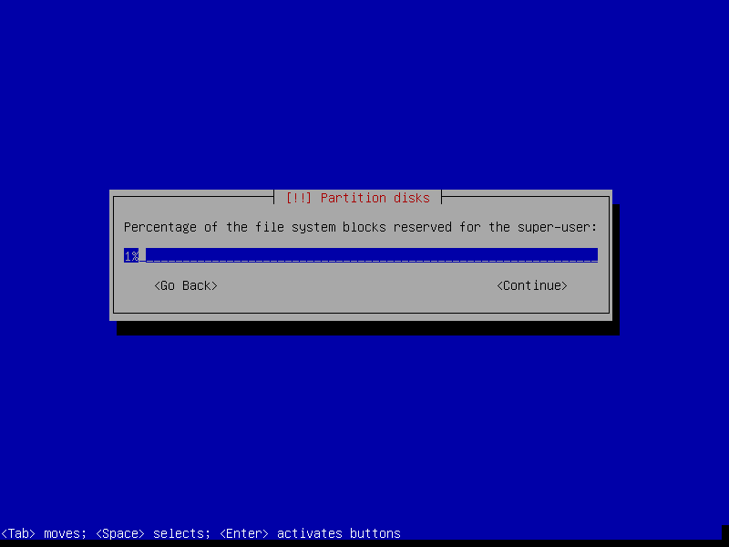


3. Install packages and finish up
Select only [*] standard system utilities if you wish to start with a minimal, console-only base configuration ready for further customization. Task menu can be accessed post-install by running tasksel.


If an encrypted home partition was created in Step 2 the system will display a passphrase prompt to unlock the partition.

4. Post-install
I created a post-install shell script to configure or upgrade (to testing or sid) a fresh setup.
Happy hacking!